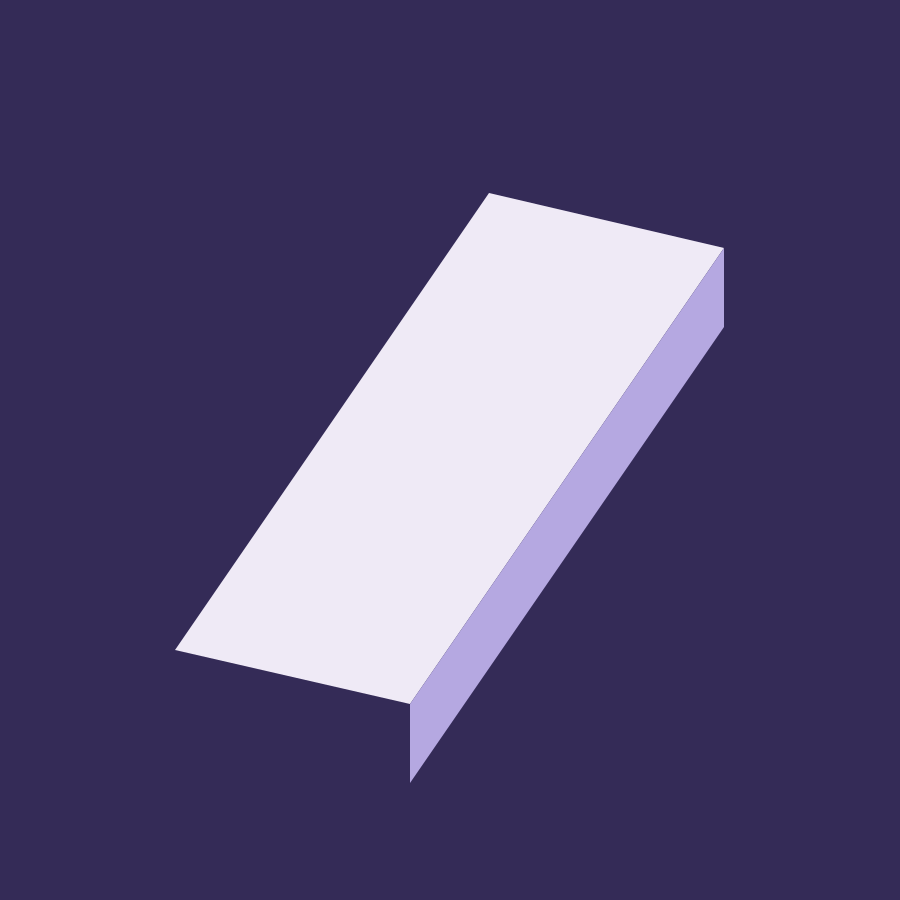
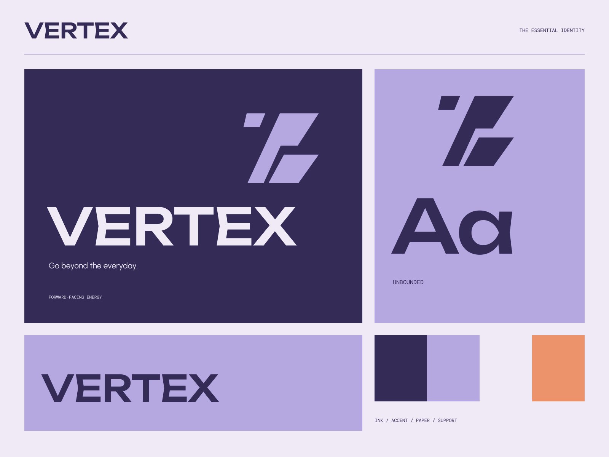

01
A useful new direction
Thoughtful mobility design for the way you actually move.
ELECTRIC MOVEMENT / FORWARD THINKING
Go beyond the everyday. Made for a different kind of momentum.

A coherent little world
Made for a different kind of momentum. Go beyond the everyday.
01
Thoughtful mobility design for the way you actually move.
02
A clear, considered system from form to information.
03
A new perspective on everyday journeys.

The point of view
Prismatic speed studies, directional shards, technical product crops, and a striking violet interface. Momentum lives in geometry while practical information stays steady.